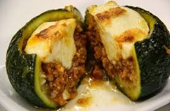

Zapallitos Rellenos

Zapallitos rellenos con carne
En esta oportunidad vamos a compartir la receta que sin dudas ocupa un lugar muy importante en nuestra memoria, como olvidar los zapallitos rellenos de la abuela. Hoy aquí los representaremos de la forma mas fiel posible.
Si quieres obtener el resultado mas parecido a lo que habita en tu recuerdo, no olviedes, no escatimes en tiempo, ni en cariño, ni en la calidad de los ingredientes los que detallamos a continuación:
- 3 zapallitos
- 1/4kg. de carne picada magra
- 1 puerro
- 1 cebolla de verdeo
- 1 cebolla
- 1 trozo de aji morrón
- 1 diente de ajo
- 1 cucharada de queso ralladao
- 6 trozos de queso mantecoso
- 1 cucharada de pan rallado
Elaboración paso a paso
- Picamos los vegetales y los salteamos en aceite hasta que la cebolla quede transparente.
- Incorporamos la carne picada a los vegetales salteados, revolviendo periodicamente. Una vez cocida la carne, dejar enfirar.
- De forma paralela al preparado del relleno ponemos a hervir los sapallitos por 10 minutos, el tiempo varía un poco en función al tamaño de los zapallitos. Deben estar cocidos pero no demaciado blandos porque se rompen. Luego de cocidos dejamos enfriar.
- Ya frios los zapallitos los cortamos de forma de sacar una especie de tapita, con una chuchara le sacamos las semillas hasta dejarlos lo suficientemente huecos para que entre la carne. Si en este proceso debemos sacar mucha pulpa, la mezclamso con el relleno de carne.
- Rellenamos los zapallitos con nuestra preparación, los colocamos en una asadera, espolvoreamos con queso y al horno por unos 15 minutos hasta que dore
- Ahora a disfrutar este viaje en el tiempo!